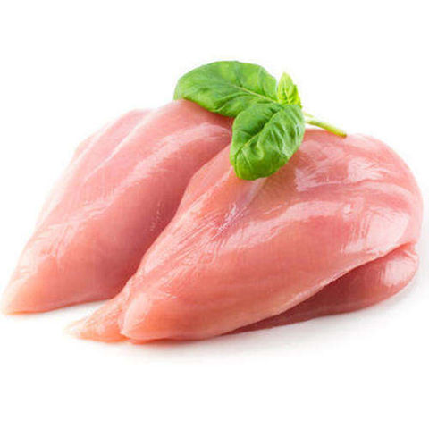

Siga com a gente para fazer o melhor strofonoff de frango da historia bem molhadinho com o frango perfeitamente cozido sem mais nem menos slk papai toma vai toma
Ingredientes:
- 1kg de peito de frango desossado
- Temperos a gosto
- paprica defumada
- noz moscada
- sal
- pimenta do reino
- acafrao
- curcuma
- curry
- 200ml Ketchup
- 150ml Mostarda
- 200ml Creme de leite
- 400ml Molho de tomate
- (OPCIONAL) cogumento champgnon
Como fazer
- Pegue o peito de frango 
- Corte em cubos pequenos
- tempere do seu jeito
- frite em uma panela pre-aquecida o frango (e o champgnon se tiver na receira) ate ficar marronzinho hmmm
- coloque a mostarda, o ketchup e o molho de tomate e cozinhe por um tempo
- desligue o fogo e misture o creme de leite ate ficar uniforme
- sirva com arroz e batata palha e uma coquinha gelada